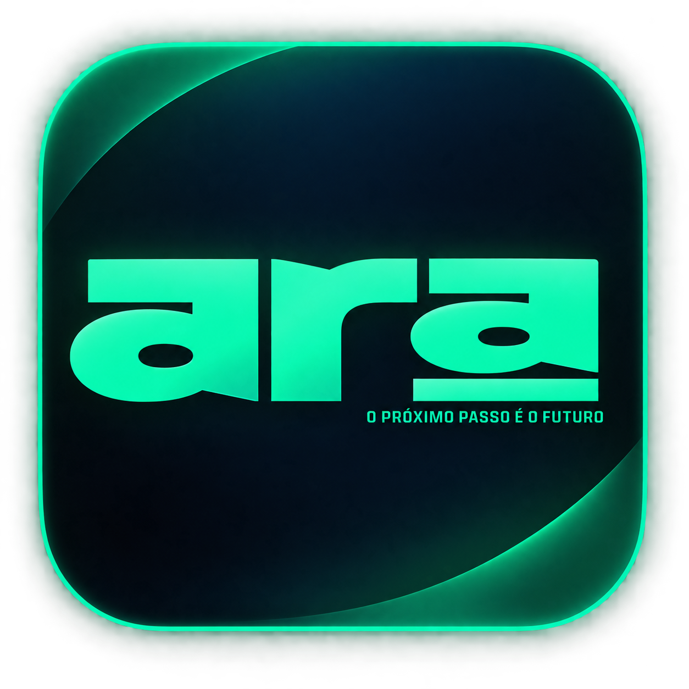

Uma assistente que entende o ambiente.
Conversas, tarefas, lembretes, arquivos e projetos podem fazer parte do mesmo fluxo.

A.R.A.A.R.A. é uma assistente pessoal inteligente criada para reunir conversa, organização, memória, arquivos, projetos e automações em um único ambiente.
A.R.A. não foi pensada para ser apenas uma caixa de conversa. Foi pensada como uma camada inteligente entre você e o que precisa acontecer.
Conversas, tarefas, lembretes, arquivos e projetos podem fazer parte do mesmo fluxo.
A proposta é ir além de responder: criar, organizar, atualizar e acompanhar ações autorizadas.
Preferências, objetivos e contexto persistente com revisão e controle pelo usuário.
Espaço central para perguntar, planejar e criar.
BASE EXISTENTELinguagem natural convertida em ações e prazos.
BASE EXISTENTEContexto persistente, consolidado e controlável.
EM EVOLUÇÃOConhecimento pessoal e documentos conectados.
ROADMAPConversas, tarefas, arquivos e contexto agrupados.
ROADMAPFluxos recorrentes e notificações inteligentes.
ROADMAPServiços externos conectados à experiência.
ROADMAPA.R.A. além da interface web.
FUTUROAutenticação, conversas, tarefas, lembretes, backend, banco e infraestrutura.
Novo produto visual, memória inteligente e interface contextual.
Conhecimento conectado, contextos de projeto, notificações e integrações.
Expansão para dispositivos móveis e infraestrutura de IA.
“Tecnologia útil não deveria exigir que você pense como a ferramenta. A ferramenta deveria entender melhor como você trabalha.”
O produto está em desenvolvimento. Esta página apresenta a visão e acompanha a evolução pública do projeto.
Não. A proposta reúne conversa, tarefas, lembretes, memória, arquivos, projetos, automações e integrações.
Sim. Mobile faz parte da direção planejada após a consolidação da experiência web.
Uma experiência de assistente pessoal que combina contexto, organização e ação.